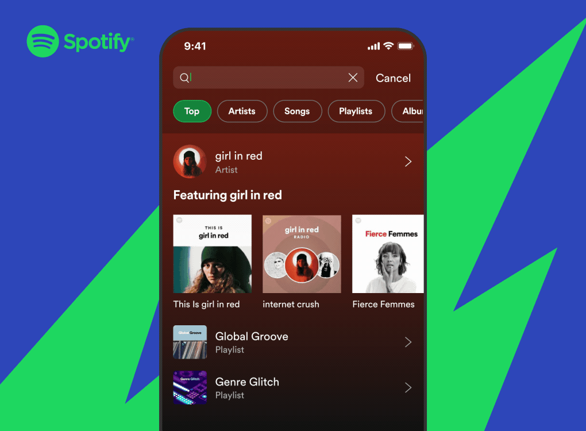

Groupie-Tracker est un site web qui vous permet de suivre vos groupes de musique préférés. Vous pouvez consulter les informations sur les groupes, les albums et les concerts. Vous pouvez également lancer des recherches sur spotify, youtube et deezer.
